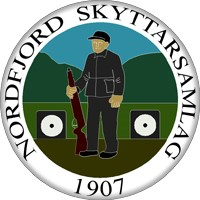
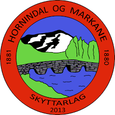
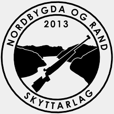
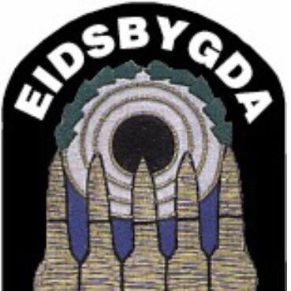

Retura-cup
2022
Oppdatert: 30.1.2022, 22:35
| Skytter | Skytterlag | Total |  |  |  | | ||
|---|---|---|---|---|---|---|---|---|
| Andreas Valde | Engesetdal/Skodje | 72 | 15 | 12 | 15 | 15 | 15 | |
| Ørjan Frøysadal Hauge | Sunnylven | 54 | 10 | 10 | 12 | 10 | 12 | |
| Daniel Matias Mjellem | Hyen | 42 | 12 | 15 | 15 | |||
| Ole Kristian Lødemel | Hornindal og Markane | 41 | 6 | 3 | 10 | 8 | 6 | 8 |
| Lina Riksheim | Hovdebygda og Ørsta | 33 | 8 | 5 | 10 | 10 | ||
| Aurora Grinde | Haugen | 29 | 5 | 8 | 8 | 4 | 4 | |
| Emilie Selstad | Almenning | 29 | 6 | 5 | 2 | 12 | 4 | |
| Thitiphan Ngoenaree | Almenning | 29 | 4 | 12 | 3 | 5 | 5 | |
| Jakob Mathias Nesheim Aardalsbakke | Eidsbygda | 25 | 6 | 5 | 8 | 6 | ||
| Isak Andre Berget | Dalane | 8 | 6 | 2 | ||||
| Andreas Silden | Haugen | 7 | 4 | 2 | 1 | |||
| Jonas Espe | Haugen | 5 | 3 | 1 | 1 |
| Skytter | Skytterlag | Total | | |||||
|---|---|---|---|---|---|---|---|---|
| Linnea Grinde | Haugen | 60 | 15 | 12 | 12 | 6 | 15 | |
| Emma Årdal | Almenning | 54 | 10 | 5 | 15 | 12 | 12 | |
| Kristine Solheim | Almenning | 49 | 8 | 10 | 8 | 15 | 8 | |
| Lars Rune Mjellem | Hyen | 42 | 12 | 15 | 15 | |||
| Oliver Flo Heggen | Eidsbygda | 34 | 4 | 10 | 10 | 10 | ||
| Joakim Beinnes Førde | Nordbygda og Rand | 29 | 8 | 5 | 6 | 4 | 6 | |
| Thomas Espe | Haugen | 18 | 6 | 6 | 2 | 4 | ||
| Marius Løvold Husevåg | Eidsbygda | 18 | 8 | 5 | 5 | |||
| Hedda Margrete Strøm | Haugen | 12 | 12 | |||||
| Katrine Svarstad Heggdal | Hornindal og Markane | 10 | 10 | |||||
| Gunnar Kragseth | Eidsbygda | 3 | 3 |
| Skytter | Skytterlag | Total | | |||||
|---|---|---|---|---|---|---|---|---|
| Amanda Svoren Espe | Haugen | 62 | 12 | 15 | 10 | 15 | 10 | |
| Patrick Solheim | Almenning | 51 | 12 | 15 | 12 | 12 | ||
| Hans Erik Haugland | Haugen | 30 | 15 | 15 | ||||
| Robin Løvold Husevåg | Eidsbygda | 26 | 12 | 6 | 8 | |||
| Sander Lund | Nordbygda og Rand | 24 | 10 | 8 | 6 | |||
| Olina Svarstad Heggdal | Hornindal og Markane | 15 | 15 | |||||
| Kornelia Trøsken | Hornindal og Markane | 10 | 10 | |||||
| Jesper Svarstad Hole | Hornindal og Markane | 8 | 8 |
| Skytter | Skytterlag | Total | | |||||
|---|---|---|---|---|---|---|---|---|
| Ola-Johan Dybvik | Langevåg | 72 | 15 | 12 | 15 | 15 | 15 | |
| Ask Aarsæther | Hovdebygda og Ørsta | 51 | 12 | 15 | 12 | 12 | ||
| Richard Solheim | Almenning | 39 | 8 | 15 | 8 | 8 | ||
| Elise Erstad | Langevåg | 32 | 10 | 12 | 10 | |||
| Isak Frøysadal Hauge | Sunnylven | 20 | 10 | 10 |
| Skytter | Skytterlag | Total | | |||||
|---|---|---|---|---|---|---|---|---|
| Morten Taraldset | Hornindal og Markane | 54 | 15 | 12 | 15 | 12 | ||
| Marius Åboen | Lom og Skjåk | 30 | 15 | 15 | ||||
| Espen Aarreberg | Utvik og Innvik | 12 | 12 |
| Skytter | Skytterlag | Total | | |||||
|---|---|---|---|---|---|---|---|---|
| Ole Kristian Aasen | Haugen | 30 | 15 | 15 | ||||
| Svein Arne Arnesen | Hjørungavåg | 15 | 15 | |||||
| Ann Therese Gausemel | Hornindal og Markane | 12 | 12 |
| Skytter | Skytterlag | Total | | |||||
|---|---|---|---|---|---|---|---|---|
| Viljar Riksheim | Hovdebygda og Ørsta | 50 | 15 | 15 | 12 | 8 | ||
| Janne Tormodset | Viksdalen | 42 | 15 | 15 | 12 | |||
| Asle Homberset | Hjartåbygda | 25 | 10 | 15 | ||||
| Leif Gunnar Ødegård | Bryggja | 10 | 10 |
| Skytter | Skytterlag | Total | | |||||
|---|---|---|---|---|---|---|---|---|
| Runar Driveklepp | Volda | 50 | 10 | 10 | 15 | 15 | ||
| Atle Lotsberg | Nordbygda og Rand | 47 | 6 | 6 | 15 | 10 | 10 | |
| Asbjørn Myklebust | Hovdebygda og Ørsta | 44 | 12 | 8 | 12 | 12 | ||
| Ørjan Aven | Førde | 35 | 8 | 12 | 15 | |||
| Anita Lystad | Hovdebygda og Ørsta | 30 | 15 | 15 | ||||
| Jakob Lotsberg | Nordbygda og Rand | 22 | 5 | 12 | 5 | |||
| Kristian Lotsberg | Nordbygda og Rand | 22 | 8 | 10 | 4 | |||
| Per Tore Taklo | Hundeide | 22 | 8 | 8 | 6 | |||
| Roy Cato Hopland | Nordbygda og Rand | 16 | 4 | 12 | ||||
| Alf Erik Røyrvik | Hyen | 10 | 10 | |||||
| Torill Lystad | Hovdebygda og Ørsta | 8 | 5 | 3 | ||||
| Jan Ove Lotsberg | Nordbygda og Rand | 8 | 8 | |||||
| Ann - Kristin Sætre | Hundeide | 2 | 2 | |||||
| Bjarne Eriksen | Nordbygda og Rand | 1 | 1 |
| Skytter | Skytterlag | Total | | |||||
|---|---|---|---|---|---|---|---|---|
| Regine Nesheim | Eidsbygda | 75 | 10 | 15 | 15 | 12 | 8 | 15 |
| Ole Arild Aa | Hyen | 52 | 12 | 12 | 12 | 4 | 12 | |
| Roger Nesheim | Eidsbygda | 40 | 6 | 4 | 10 | 2 | 15 | 3 |
| Kristian Frøysadal Hauge | Sunnylven | 36 | 8 | 6 | 12 | 10 | ||
| Ben Magne Stokland | Stadlandet | 33 | 15 | 10 | 1 | 5 | 2 | |
| Reidun Kristin Knapstad | Florø | 30 | 8 | 10 | 6 | 6 | ||
| Maren Galguften Lunsæter | Tromsø | 26 | 8 | 10 | 8 | |||
| Anders Haugen | Lom og Skjåk | 20 | 15 | 5 | ||||
| Inge Hvitås | Kjølsdalen | 18 | 8 | 6 | 4 | |||
| Trond Petter Lystad | Hovdebygda og Ørsta | 16 | 4 | 3 | 5 | 3 | 1 | |
| Bertel Oddne Mjellem | Hyen | 15 | 5 | 5 | 5 | |||
| Jan Roger Hoff | Viksdalen | 7 | 3 | 4 | ||||
| Geir Kjetil Aa Hope | Hyen | 6 | 6 | |||||
| Nils Holme | Hyen | 2 | 2 |
| Skytter | Skytterlag | Total | | |||||
|---|---|---|---|---|---|---|---|---|
| Arve Halsteinslid | Haugen | 64 | 12 | 10 | 15 | 12 | 15 | |
| Arild Fure | Stryn | 39 | 10 | 8 | 6 | 12 | 3 | |
| Trond Jøingsli | Lom og Skjåk | 37 | 8 | 15 | 4 | 10 | ||
| Leiv Reksten | Nordbygda og Rand | 27 | 15 | 12 | ||||
| Terje Alværvik | Gaular | 24 | 3 | 15 | 6 | |||
| Magnar Isene | Førde | 23 | 15 | 8 | ||||
| John Steinar Sandven | Førde | 22 | 10 | 12 | ||||
| Oddmund Tormodset | Viksdalen | 14 | 2 | 10 | 2 | |||
| Thorstein Åmodt | Lom og Skjåk | 13 | 8 | 5 | ||||
| Arnstein Ose | Hovdebygda og Ørsta | 12 | 6 | 6 | ||||
| Bjørnar Osnes | Syvde | 9 | 5 | 4 |
| Skytter | Skytterlag | Total | | |||||
|---|---|---|---|---|---|---|---|---|
| Magne Skårbø | Stadlandet | 74 | 10 | 10 | 15 | 15 | 12 | 12 |
| Ottar Strandheim | Lavikdal | 52 | 10 | 12 | 15 | 15 | ||
| Per Ulvestad | Hovdebygda og Ørsta | 44 | 15 | 15 | 6 | 8 | ||
| Harry Gram | Førde | 38 | 12 | 10 | 10 | 6 | ||
| Idar Berget | Dalane | 34 | 12 | 12 | 5 | 5 | ||
| Ove Ekremsæter | Syvde | 18 | 8 | 10 |
| Skytter | Skytterlag | Total | | |||||
|---|---|---|---|---|---|---|---|---|
| Anton Jon Aarskog | Sundnes | 72 | 15 | 12 | 10 | 15 | 15 | 5 |
| Knut Riise | Hovdebygda og Ørsta | 51 | 12 | 15 | 8 | 6 | 10 | |
| Magnar Molland | Hafslo | 50 | 15 | 10 | 10 | 15 | ||
| Kristen Lotsberg | Nordbygda og Rand | 41 | 10 | 10 | 5 | 12 | 4 | |
| Karstein Velle | Fiskå | 32 | 8 | 12 | 12 | |||
| Erling Sylte | Fiskå | 23 | 6 | 3 | 6 | 5 | 3 | |
| Kåre Olav Skår | Vadheim | 19 | 5 | 2 | 4 | 8 | ||
| Ludvig Indrebø | Farnes | 19 | 6 | 3 | 10 | |||
| Knut Lillestøl | Hornindal og Markane | 18 | 3 | 8 | 4 | 2 | 1 | |
| Toralf Årdal | Jølster | 17 | 8 | 6 | 3 | |||
| Svein Hoem | Stryn | 17 | 1 | 5 | 1 | 3 | 1 | 6 |
| Odd Peter Skinlo | Hyen | 16 | 4 | 4 | 2 | 1 | 5 | |
| Egil Melvær | Florø | 12 | 12 | |||||
| Bjarne Sandvik | Knipenborg | 5 | 2 | 3 | ||||
| Svein Rand | Nordbygda og Rand | 5 | 5 | |||||
| Nils Bjørdal | Hovdebygda og Ørsta | 2 | 2 |